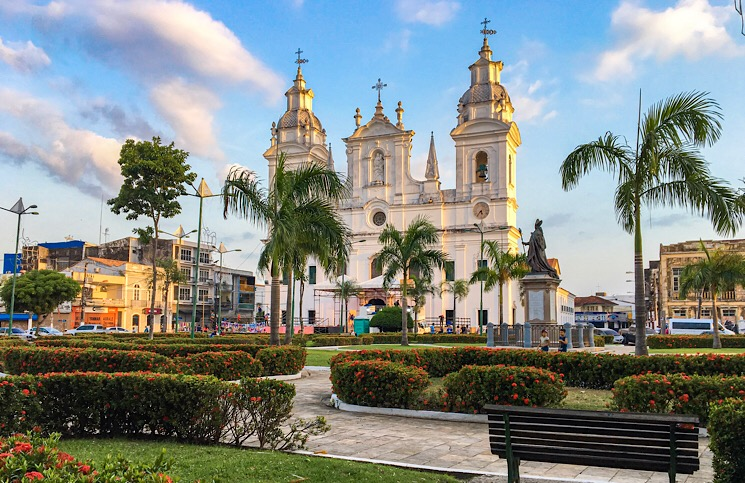

O Pará é um estado localizado na Região Norte do Brasil, com uma população de cerca de 8,7 milhões de habitantes. Sua capital é Belém, uma cidade conhecida por sua cultura vibrante e forte influência indígena. Entre os principais pontos turísticos do estado estão o Mercado Ver-o-Peso, em Belém, famoso por sua gastronomia e produtos regionais, a Ilha de Marajó, que é a maior ilha fluvial do mundo, e o Parque Nacional do Monte Roraima, uma formação de origem antiga com paisagens incríveis. Quanto ao governador atual, até outubro de 2023, o governador do Pará é Helder Barbalho.
